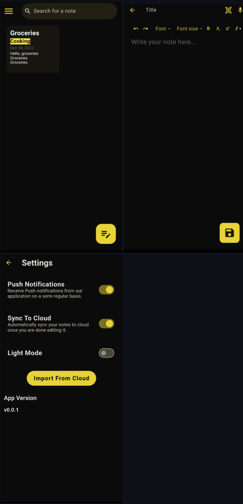

Project Type: Cross-Platform AI App · NLP
Notes.AI is a cross-platform mobile application designed to enhance note-taking using natural language processing. The app helps users organize their thoughts, summarize content, and auto-complete ideas using generative AI. It combines a sleek user interface with intelligent backend services to streamline the writing process.
Users can generate summaries of long paragraphs, auto-complete unfinished sentences, and expand brief notes into more detailed entries. The AI engine is powered by Cohere’s large language models and OpenAI APIs, integrated with a custom Python backend.
The system also supports self-learning: users can manually tag their notes, and when a new tag is introduced, the app generates example entries for that tag and retrains itself to improve classification and suggestion accuracy over time.
Flutter, Dart, Firebase, Flask, Python, Cohere, OpenAI APIs, REST
 ← Back to Portfolio